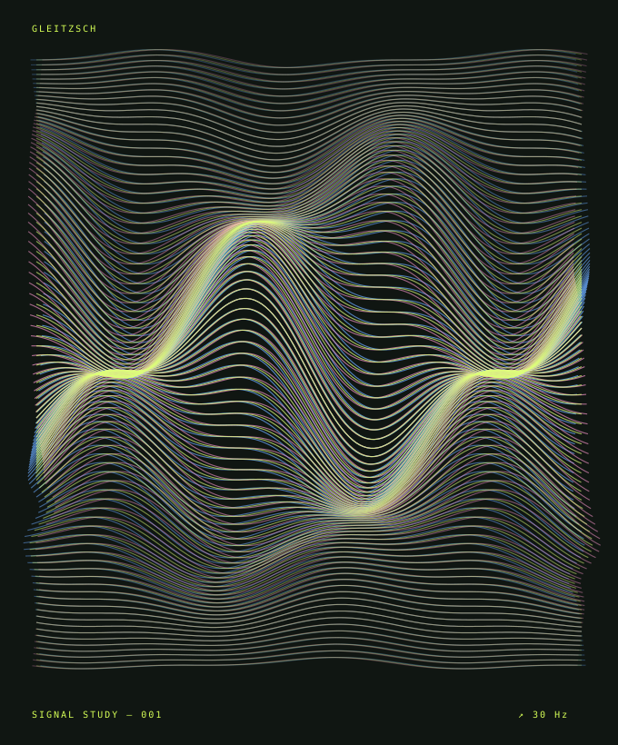

Let it wander.
Let the camera explore the effects for you. Colours separate, edges bend, things fall apart. Sometimes something interesting happens.
An experimental camera for iPhone
Depending on your definition of beauty.

Keep the accident
Let the camera explore the effects for you. Colours separate, edges bend, things fall apart. Sometimes something interesting happens.
Found something you like? Switch to Custom to stop the wandering. Keep the mix, tweak it, or make things considerably worse.
Save your photographs to Photos, and your favourite mixes to C1, C2 or C3. Some accidents are worth repeating.
I like the aesthetics of old CRT televisions losing their signal, chewed-up VHS tapes, and colours going where they shouldn’t. Working in the frequency domain with Fourier transforms gives me another way to play with that look, and occasionally discover something entirely different.
I wanted a bit of that world in my pocket, and figured someone else might enjoy it too. Whatever you make with Gleitzsch is part of the project. No grand mission, just a little more glitch in the world.
Under the hood, it’s decades-old signal-processing mathematics. Apple’s highly optimised Accelerate framework and GPU-powered Metal make it possible to do all this in real time, entirely on your iPhone.
Thanks, Fourier, for the mathematics. Sorry about the results.
And thanks to Codex for helping me express what I feel through code, and to Cursor for lending a hand along the way.
Still in development. No public download yet. A TestFlight link will appear here when it’s ready.
Questions & ideas ↗